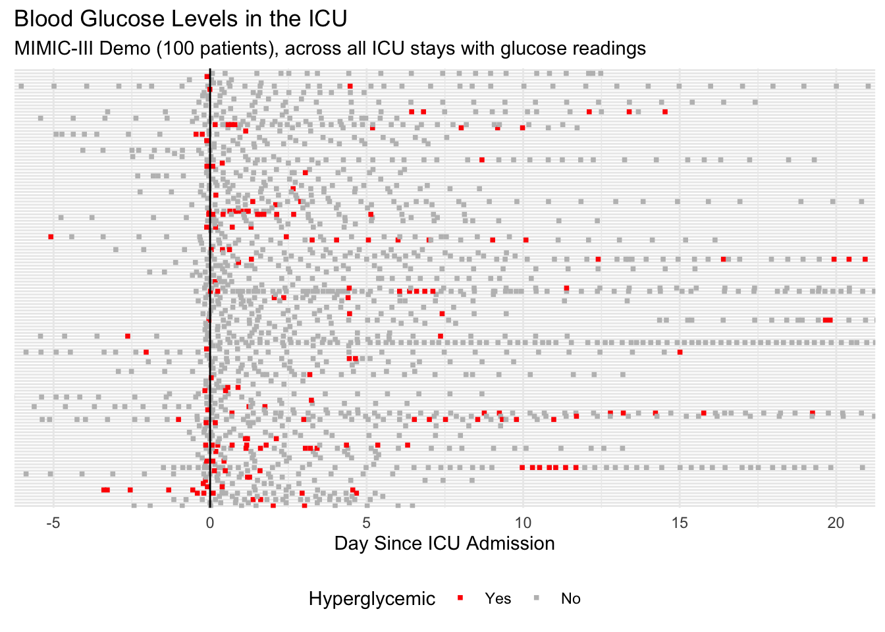
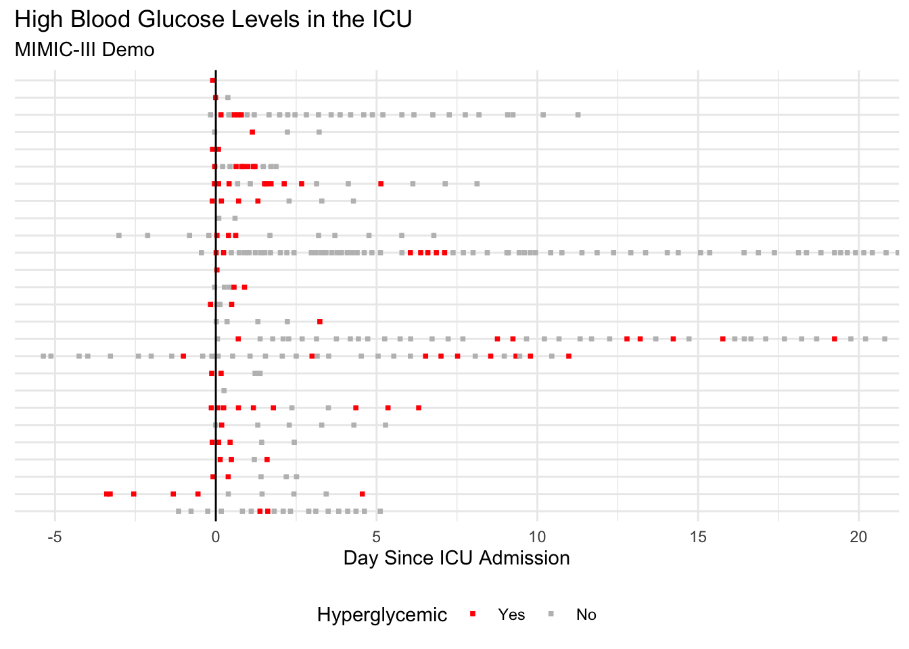

Blood Glucose
Motivation
The standard of care for patients with hyperglycemia is insulin. We want to see if we can find data that is consistent with this standard.
Analysis
First, we need to find the ID for our item of interest in the MIMIC-III dictionary.
| row_id | itemid | label | fluid | category | loinc_code |
|---|---|---|---|---|---|
| 10 | 50809 | Glucose | Blood | Blood Gas | 2339-0 |
| 132 | 50931 | Glucose | Blood | Chemistry | 2345-7 |
So the label we need for Blood Glucose is 50931.
We will filter down to all and only the matching labs. Hyperglycemia is formally defined as \(BG > 200\), so we will color the \(BG\) as such.

| Characteristic | N = 1001 |
|---|---|
| Gender | |
| F | 55 (55%) |
| M | 45 (45%) |
| Length Of Stay | 2.1 (1.1, 4.6) |
| Age | 76.9 (64.9, 85.2) |
| 1 n (%); Median (IQR) | |
Let’s try that again, but this time, we will focus only on the patients with high glucose around the time they entered the ICU. Here’s the definition:
\(mean(BG_{day}: day \in [-2 , 1 ]) > 170\)

| Characteristic | N = 211 |
|---|---|
| Gender | |
| F | 14 (67%) |
| M | 7 (33%) |
| Length Of Stay | 2.1 (1.0, 2.9) |
| Age | 75.7 (68.6, 83.3) |
| 1 n (%); Median (IQR) | |